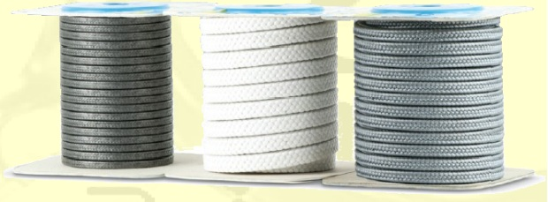
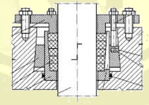

Szczeliwa do zastosowań dynamicznych są najstarszą i do tej pory najczęściej stosowaną formą uszczelniania w pompach i armaturach, dzięki łatwości ich stosowania, uniwersalności, trwałości oraz relatywnie niskiej cenie. Wprowadzenie osiągnięć inżynierii materiałowej, nowych materiałów oraz bardziej wyspecjalizowanych kompozycji materiałowych i konstrukcyjnych pozwalają, przy zachowaniu prawidłowego montażu i eksploatacji, uzyskiwać coraz trwalsze uszczelnienia dławnic pomp, armatur oraz wałów mieszadeł, mikserów i młynów. Ze względu na warunki występujące w miejscu pracy tych szczeliw, do ich produkcji wykorzystuje się specjalnie dobrane kompozycje przędz i impregnatów. Szczeliwa te są stosowane we wszystkich gałęziach przemysłu, a zwłaszcza chemicznego, energetyki, gospodarki komunalnej.

Szczeliwa do zastosowań statycznych, stosowane są jako uszczelnienia elementów maszyn i urządzeń, wszelkiego rodzaju zamknięć, gdzie najbardziej znaczącym parametrem jest temperatura i ciśnienie. Do produkcji szczeliw wykorzystywane są przędze na bazie włókien naturalnych (głównie bawełna), syntetycznych (poliakrylonitryl, aramid), PTFE czystych i modyfikowanych (uwłóknione wypełnione grafitem, impregnowane olejem silikonowym), grafitowych, węglowych oraz ceramicznych. Stosowane są głównie w hutnictwie, energetyce, odlewnictwie oraz w przemyśle chemicznym i maszynowym.
